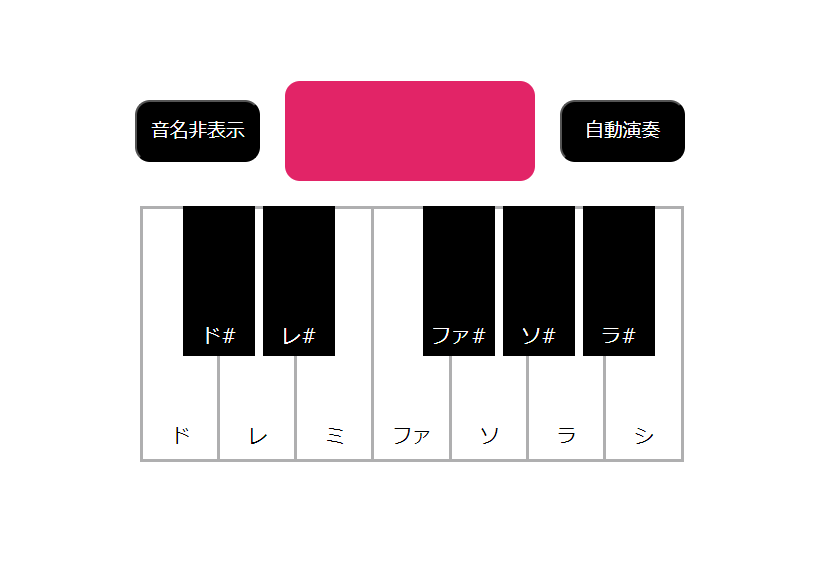
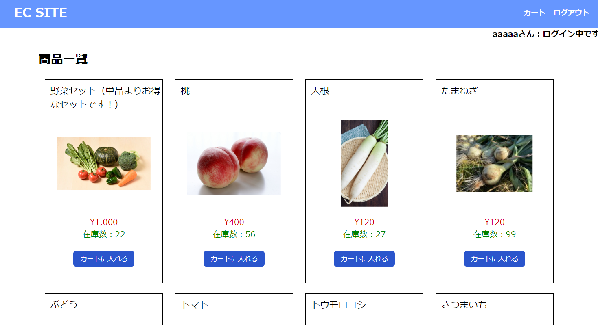
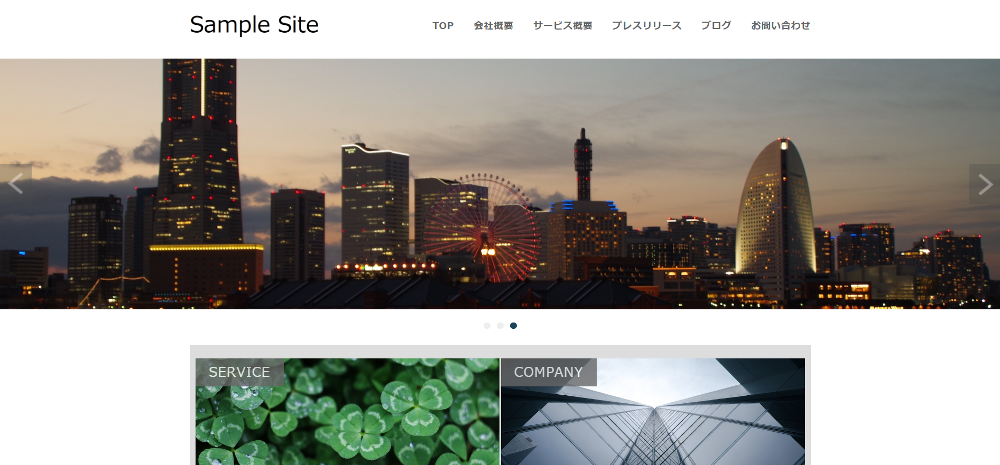

S
eiya Okamoto's Portfolio
自己紹介
制作物
MENU
HOME
自己紹介
制作物
自己紹介
ご覧いただき、ありがとうございます。
岡本聖也
と申します。
私は、XX年間、機械設計エンジニアとして航空機の設計開発をしておりました。
その業務にて、CAD上で動くVBを用いたマクロを作成したことがきっかけで、プログラミングに興味を持ちました。 そして、プログラミング学習を行うにつれて、システムを制作することに大変面白さを感じ、 IT業界は未経験ながらも転職を決意しました。
ものづくり技術者として、チームで設計開発をしてきた経験を活かしつつ、 IT技術を貪欲に吸収していきたいと思っております。
スキル
HTML/CSS
JavaScript/jQuery
PHP/MySQL
WordPress
Java（現在、学習中）
保有資格
ITパスポート
基本情報技術者
制作物
ピアノアプリ

◆使用技術
JavaScript/jQuery
◆概要説明
鍵盤をクリックすると、ピアノ音が鳴るWebアプリです。 自動演奏ボタンをクリックすると、曲が自動で演奏されます。
◆こだわりポイント
鳴っている音の鍵盤がピンク色に変わるため、どの音が鳴っているのか分かりやすい点。
◆得たスキル・経験
JavaScriptの基本的なコーディングスキル/ ライブラリの使用経験/ 可読性・メンテナンス性の高いソースコードを書く能力
ECサイト

◆使用技術
PHP/MySQL
◆概要説明
商品管理ができる管理者ページ、商品を購入までできるユーザーページを持つECサイトです。 管理者ページには、管理者用ID（ID:ec_admin, パスワード:ec_admin）でログインして下さい。
◆実装した機能
ユーザー登録、ログイン機能/商品管理機能（販売商品の登録、削除、在庫数の変更等）/ 商品購入機能（購入商品の選択、削除、購入数の変更等）
◆こだわりポイント
セキュリティ対策（XSS,SQLインジェクション対策）を施した点。
◆得たスキル・経験
PHPの基本的なコーディングスキル/DBでのCRUD操作経験/MVCモデルでの実装/ CookieやSession、バリデーションの実装/システム設計・DB設計経験
◆システム設計・DB設計にて作成した書類
ページ一覧、画面遷移図、テーブル定義書、ER図、コーディング規約
→詳細はこちらをクリックしてご覧下さい
WordPress自作テーマを使用したコーポレートサイト

◆使用技術
WordPress/PHP
◆概要説明
WordPressのオリジナルテーマを作成し、それを利用した架空のコーポレートサイトです。
◆こだわりポイント
カスタムフィールドを使用したことで、プログラミングの知識がない人でも、サイトを更新するのを容易にした点。
◆得たスキル・経験
WordPressの基本操作/プラグインの使用/ WordPressの環境構築、オリジナルテーマ作成経験
GitHub
制作物のソースコードは
こちら